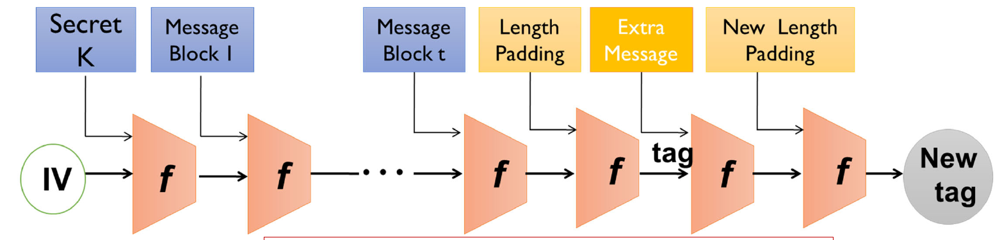
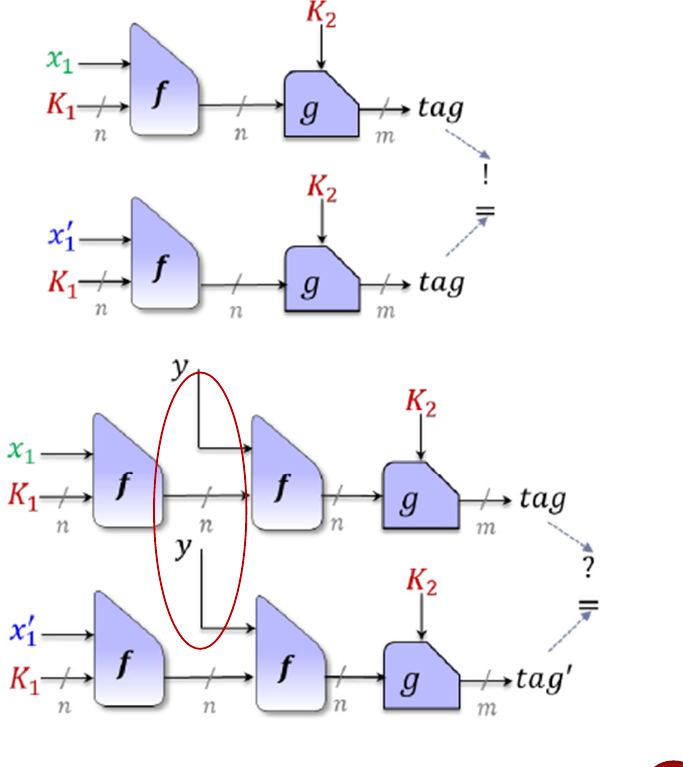
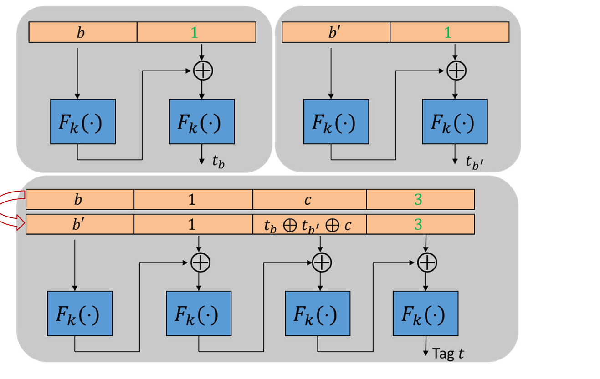

消息认证码¶
来源：
密码分析学 / notes/08-消息认证/消息认证码.md
功能与安全属性¶
消息认证码（MAC）由共享秘密密钥的通信双方使用：发送方计算 \(T=\operatorname{MAC}_K(M)\) 并发送 \((M,T)\)，接收方用 \(K\) 验证标签是否正确。它提供消息完整性和来源认证，可以基于分组密码或杂凑函数构造。
一次认证的流程¶
- 双方事先共享密钥 \(K\)。发送方对消息 \(M\) 计算标签 \(T=\operatorname{MAC}_K(M)\)。
- 发送方发送 \((M,T)\)；消息可以公开，密钥不能公开。
- 接收方根据收到的消息计算 \(T'=\operatorname{MAC}_K(M)\)，比较 \(T'\) 和收到的 \(T\)。相同则接受，不同则拒绝。
flowchart LR
M[消息 M] --> A[用 K 计算 MAC]
A --> T[发送 M 和标签 T]
T --> B[用共享密钥 K 重新计算]
B --> C{标签相同？}
C -->|是| D[接受]
C -->|否| E[拒绝]
与普通杂凑值的区别：公开的 \(H(M)\) 任何人都能计算；MAC 的标签依赖秘密密钥，攻击者修改消息后不能直接重算有效标签。这就是 MAC 可以用于认证的原因。
MAC 本身不提供保密性；持有同一个密钥的任何一方都能生成标签，所以它也不提供数字签名意义上的不可否认性。重放一个先前有效的消息和标签仍会通过验证，必须结合序号、随机数或时间戳等协议机制处理重放。
攻击手段与目标¶
- 已知消息攻击：被动观察消息及其标签。
- 选择消息攻击：主动向 MAC 接口查询所选消息的标签；自适应攻击可根据之前的结果选择后续消息。
- 区分攻击：判断黑盒实现是目标 MAC 还是某个理想对象，例如随机函数。
- 恢复密钥：求出可以用于生成有效标签的密钥。
- 伪造：输出一个满足 \(\operatorname{Vrfy}_K(M^*,T^*)=1\) 的新消息—标签对。标准存在性不可伪造模型要求 \(M^*\) 没有被用于查询生成标签。
课件按攻击者能达到的目标由强到弱介绍：
- 恢复密钥：取得密钥后，可对任意消息生成标签。
- 通用伪造：无需恢复密钥，就能对任意指定的新消息生成有效标签。
- 选择性伪造：在获取查询结果前指定目标消息，再为它生成有效标签。
- 存在性伪造：构造至少一条新消息及其有效标签，消息的内容可由攻击者决定。
选择消息下的存在性不可伪造（EUF-CMA）要求有效率的攻击者即使可以查询所选消息的标签，也不能以显著概率完成上述存在性伪造。这是常用的 MAC 安全目标。
三类伪造怎么区分？¶
| 攻击结果 | 目标消息何时或由谁确定？ | 攻击者要完成什么？ |
|---|---|---|
| 通用伪造 | 任意指定的一条新消息 | 能为指定消息产生有效标签 |
| 选择性伪造 | 查询标签前先选定一条目标消息 | 为这条事先选定的消息产生有效标签 |
| 存在性伪造 | 攻击者自行构造至少一条新消息 | 为其中一条新消息产生有效标签 |
例如攻击者能为任何新转账指令生成标签，属于通用伪造；先选定一条转账指令，再为它生成标签，是选择性伪造；只需构造出一条没查过标签、能通过验证的消息，即是存在性伪造。
“新消息”指什么？ 攻击者查询过 \(M_1,\ldots,M_q\) 的标签后，输出 \((M^*,T^*)\)；成功要满足 \(M^*\notin\{M_1,\ldots,M_q\}\) 且验证通过。把查询过的 \((M_i,T_i)\) 原样再发一遍是重放，不是这里定义的新消息伪造。
通用攻击与实现问题¶
设标签有 \(t\) 位、密钥有 \(k\) 位。对理想的 \(t\) 位标签，盲猜一次的成功概率是 \(2^{-t}\)；若各次尝试独立且成功概率很小，\(q\) 次在线验证尝试的成功概率约为 \(q/2^t\)。穷举标签的工作量量级为 \(2^t\)，但需要验证接口；协议中的限速和失败次数限制影响实际可尝试次数。
穷举 \(k\) 位密钥需要约 \(2^k\) 次离线计算：逐一试算候选密钥，用多组已知消息—标签对排除错误匹配。课件用 \(\min(2^t,2^k)\) 概括通用攻击的量级，其中标签猜测计在线验证次数，密钥穷举计离线计算次数。
课件建议使用 128 位标签。验证时还应使用恒定时间的标签比较，避免因为逐字节比较的耗时差异泄露正确标签的信息。
例： 标签长 \(t=64\) 比特，独立盲猜一次成功率为 \(2^{-64}\)；若允许约 \(2^{20}\) 次独立验证机会，至少成功一次的概率近似为 \(2^{20}/2^{64}=2^{-44}\)。这里计算的是在线标签猜测次数，不是离线哈希或加密次数。
基于 Merkle–Damgård 结构的简单 MAC¶
Merkle–Damgård（MD）杂凑函数把消息分组迭代压缩，并进行包含消息长度的末尾填充。下面分析三种简单密钥拼接构造，攻击利用其迭代链值的性质。
密钥前缀：长度扩展伪造¶
课件的密钥前缀形式为 \(\operatorname{MAC}_K(M)=h(K\|\operatorname{pad}_K\|M)\)，其中 \(\operatorname{pad}_K\) 表示密钥部分按构造需要使用的填充。也常见直接写作 \(h(K\|M)\)；下文将密钥和可能存在的密钥填充统一记为 \(P\)。
当输出的完整标签就是 MD 最终链值，且攻击者知道或猜对 \(|P|\) 时：
- 查询 \(M\) 的标签 \(T=h(P\|M)\)。
- 按 \(|P\|M|\) 算出该次杂凑的末尾填充 \(\operatorname{pad}(P\|M)\)。
- 把 \(T\) 当作已处理过 \(P\|M\|\operatorname{pad}(P\|M)\) 的链值，继续处理自选后缀 \(S\)，得到 \(T^*\)。
- 输出新消息 \(M^*=M\|\operatorname{pad}(P\|M)\|S\) 和 \(T^*\)，验证方计算 \(h(P\|M^*)\)，结果相同。
为什么第 3 步能够继续？原标签已经是 \(P\|M\) 连同原填充处理完后的内部链值；压缩函数只需要当前链值和后续分组。因此攻击者把 \(T\) 作为起始链值，继续输入 \(S\)，并按已经处理的总长度补上新的最终填充。
用等式写出验证方实际计算的内容：
新消息里含有原消息的填充，因此不是直接把标签当成 \(h(P\|M\|S)\)。攻击过程中始终没有求出秘密密钥。

课件第 8 页：获得原标签后，从该链值继续处理后缀。
密钥长度未知时，逐一测试候选长度。上述构造要求应用接受含填充字节的消息；选择目标消息发生在查询之前时，还可构成课件所说的选择性伪造。
课件还给出区分攻击：对约 \(2^{n/2}\) 个同长度消息查询 \(n\) 位完整标签，按生日现象找一对标签碰撞；给两个消息加相同的 MD 填充和相同后缀后，前缀 MAC 的新标签仍相同。对于随机函数，不同新消息的标签再次碰撞的概率约为 \(2^{-n}\)。这里 \(2^{n/2}\) 是在线标签查询量级，结论依赖完整链值可见、填充长度可确定及消息编码允许扩展。
密钥后缀：利用消息内部碰撞¶
密钥后缀形式为 \(\operatorname{MAC}_K(M)=h(M\|K)\)。它不受上面那种直接长度扩展伪造方式的影响，但如果能离线找到等长、分组对齐的不同消息 \(M,M'\)，使处理完各自消息部分的内部链值相同，那么后续追加的 \(K\) 及最终填充也相同，因此：
攻击者先离线找到这对消息，预先选 \(M'\) 为伪造目标，再在线查询 \(M\) 的标签 \(T\)，即可输出 \((M',T)\)。在内部链值为 \(n\) 位且可构造足够多候选消息的理想生日模型下，找碰撞约需 \(2^{n/2}\) 次离线压缩或杂凑量级的工作，之后只需一次在线 MAC 查询。
在密钥加入前取得链值碰撞，并保持长度与分组边界一致，就有 \(h(M\|K)=h(M'\|K)\)。
把这个伪造拆成时间顺序：先在离线阶段构造 \(M,M'\)，使两者经过各自消息部分后链值都为 \(H\)；在线查询 \(M\) 得到标签 \(T\)；由于两条路径从相同的 \(H\) 接上相同 \(K\) 和填充，\(M'\) 的标签也为 \(T\)。因此输出 \((M',T)\)，无需查询 \(M'\)。
密钥封装：内部碰撞与外部碰撞¶
课件还讨论示意构造 \(h(K\|M\|K)\)，将消息部分的迭代与最后的密钥处理抽象为 \(f\) 和 \(g\)。内部碰撞指进入最后处理 \(g\) 前的链值相同；外部碰撞只指最终标签相同。
对第一消息块 \(x,x'\)，若已知 \(f(K_1,x)=f(K_1,x')\)，那么附加同样的新后缀 \(y\) 后两条计算的后续状态与标签仍相同。查询 \(x\|y\) 的标签 \(T\)，就可用 \((x'\|y,T)\) 伪造，前提是后者尚未被查询。已知一对内部碰撞之后只需这一次查询；寻找碰撞的成本需要另算。
当末端 \(g\) 对内部状态是置换时，最终标签相同意味着内部状态相同；如果 \(g\) 把 \(n\) 位状态压缩到 \(m<n\) 位，观察到的标签碰撞也可能只是外部碰撞。可以对碰撞候选附加同一后缀并查询两个新标签：内部碰撞必然继续碰撞，而非内部碰撞在理想随机模型下再次碰撞的概率约为 \(2^{-m}\)。筛选已用过的消息不能再作为新消息伪造，可换一个尚未查询的后缀。
| 现象 | 中间链值 | 最终标签 | 接同一后缀后的结果 |
|---|---|---|---|
| 内部碰撞 | 相同 | 相同 | 后续状态继续相同，标签仍相同 |
| 外部碰撞 | 不一定相同 | 相同 | 不能仅凭原标签相同断言新标签相同 |
关键区别是：内部碰撞保证后续处理从同一状态开始；外部碰撞只说明最后输出相等。

课件第 12 页：比较附加相同后缀前后的标签，辅助识别内部碰撞。
课件在生日搜索与在线碰撞筛选模型下得到 \(O(2^{n/2})\) 的复杂度；总成本包括寻找碰撞和筛选内部碰撞。HMAC 使用不同的内外层密钥填充值，结构见下节。
HMAC 的内外两层¶
HMAC 的结构为
其中 \(K_0\) 是处理到杂凑函数分组长度的密钥，\(\mathrm{ipad},\mathrm{opad}\) 是两种固定填充值。先计算内层摘要，再用另一种密钥填充计算外层摘要。最终标签是外层结果，不是简单前缀 \(H(K\parallel M)\) 的内部链值，因此上面的直接长度扩展伪造不能照搬。
基于分组密码：CBC-MAC / DAA¶
课件中的 DAA 采用 CBC 链式处理。对固定长度的完整分组消息 \(M=m_1\|\cdots\|m_\ell\)，令 \(c_0=0\)，并计算：
在标准安全模型中，基本 CBC-MAC 面向固定且预先约定的消息长度；如果直接允许不同长度，将出现伪造。
按分组计算示例¶
对三分组消息 \(M=m_1\|m_2\|m_3\)，链值依次为
可以把每个 \(c_i\) 看作处理完前 \(i\) 个分组后的中间状态。最后的状态作为标签；同一个密钥、同一个中间状态再接相同后续分组，就会得到相同的后续状态。
可变长时的一次查询伪造¶
先查询单分组消息 \(m\)，得到 \(t=E_K(m)\)。然后构造两分组消息 \(m\|(t\oplus m)\)：第一轮输出 \(t\)，第二轮输入为 \(t\oplus(t\oplus m)=m\)，所以最终标签仍为 \(t\)。因此 \((m\|(t\oplus m),t)\) 是新消息的有效标签。
展开计算，验证方对伪造消息得到：
攻击者只查询过单分组 \(m\)，两分组消息 \(m\|(t\oplus m)\) 是新消息；因此这是一次选择消息查询后的存在性伪造。

课件第 15 页：两分组消息的第二轮输入与单分组消息的输入相同。
处理变长消息¶
- CMAC：使用从主密钥派生的两个子密钥区分完整末块和需要填充的末块，最后再经过分组加密。按 NIST SP 800-38B，非空消息的完整末块异或 \(K_1\)，不完整末块使用
1后补0并异或 \(K_2\)；空消息也使用填充和 \(K_2\)。\(K_1,K_2\) 从 \(E_K(0^b)\) 通过有限域倍乘派生。课件第 16 页的子密钥公式有误，本节使用上述标准定义。 - 前缀消息长度：把唯一编码的长度分组放在消息前，再进行 CBC-MAC。这样，不同长度的消息从第一分组起就被区分。
- 后缀消息长度：仅在末尾追加长度并不足够。设单分组消息 \(b,b'\) 的标签分别为 \(t_b,t_{b'}\)，即处理 \(b\|1\) 与 \(b'\|1\) 得到的链值。对任意分组 \(c\)，令 \(c'=t_b\oplus t_{b'}\oplus c\)，则三个消息分组 \(b\|1\|c\) 与 \(b'\|1\|c'\) 在处理第三分组时的输入相同，之后都追加相同长度编码 \(3\)，所以标签相同。查询前者标签即可伪造后者。

课件第 18 页：两个三分组消息在末尾长度块之前合并到同一链值。
前缀长度具体如何改变上面的攻击？单分组查询处理的是 \(\operatorname{enc}(1)\|m\)，两分组伪造处理的是 \(\operatorname{enc}(2)\|m\|(t\oplus m)\)。由于第一块就不同，不能再把单分组查询的标签 \(t\) 当成伪造消息第一块后的链值，原来的等式失效。
考前对照¶
| 问题 | 应回答的关键点 |
|---|---|
| MAC 和普通杂凑有何区别？ | MAC 依赖共享密钥，提供完整性和来源认证 |
| 是否必须恢复密钥才能伪造？ | 不必；能对未查询的新消息生成有效标签即可 |
| 三类伪造怎样区分？ | 看能否处理任意目标、是否查询前指定目标，或只需找到一条新消息 |
| 前缀 MAC 长度扩展用到了什么？ | 完整输出链值、原填充及继续计算后缀 |
| CBC-MAC 可变长为什么可伪造？ | 利用已知标签构造下一分组，使新的分组密码输入重复 |
| 为什么 HMAC 与 \(H(K\|M\|K)\) 不一样？ | HMAC 有分别使用 ipad 和 opad 的内外层结构 |
相关笔记¶
来源：课程《第 13 章 消息认证码的安全性分析概述》，第 2–18 页；CMAC 标准细节见上方 NIST 文档。